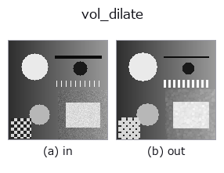
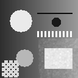

3d op• 数据种类:volume → volume
• 调用:fullseye.apply(img, "vol_dilate", a=0.5, b=0.5)(2-D 的模型是一张图 + 两个标量旋钮 a,b∈[0,1])

*图为在 128×128 合成输入上实际运行的输出。左为输入，右为输出。点云以俯视散点显示(亮度 = z)，一维序列为折线，体数据为沿 z 的最大值投影，视频为中间帧，复数图像为幅值；无法成像的返回值直接显示数值。*
*旋钮 a 不改变输出(实测: 0.1 / 0.5 / 0.9 相同)。*
*旋钮 b 不改变输出(实测: 0.1 / 0.5 / 0.9 相同)。*
阶段(前置算子 → 本算子，从左到右):
▸ vol_dilate: stages (docs site)
换别的图像(合成场景 / 照片 / 硬币。上排为输入，下排为对应输出。旋钮取默认):
▸ vol_dilate: other inputs (docs site)
动态(GIF: 依次显示帧 / 视点 / 切片。静态图是完整版，GIF 为辅助):

3D 体数据的灰度膨胀。未指定对应的 HALCON op。
> 以下的详细说明为原文 —— 摘要与标题已翻译。
`_vol_erode と同じ式 size = 1 + 2*(1 + int(a)) を使うため、a はほぼ効かない（a が [0,1) の間は int(a) が常に 0 で実質サイズ 3 固定、a=1.0 のときだけ 5）。b も未使用。半径を連続的に振りたい場合は球形構造要素版（_vol_dilation_ball 等、int(a*3) を使い a` が実際に効く）を使うこと。
• gallery2d_physics_alife_3d 族使用指南
• 示例数据目录(下载 URL / 许可证) —— 2-D 用 skimage.data(BSD/公有领域)加合成图,3-D 给出真实数据源(Stanford/PDS 等)的下载 URL。
• 算子来历与参考文献 —— 该算子族所依据的研究/方法出处。
• 算法的正典(作者・年份)与用途见上面的族使用指南。
下面的程序已确认可以运行(与图相同的输入)。在 Studio 帮助中，此块会变成按钮，可当场加载并运行。
img_to_volume 0.50 0.50 vol_dilate 0.50 0.50
▸ Load this pipeline · Load & run
• gallery2d_physics_alife_3d — py -3.11 examples/gallery2d_physics_alife_3d.py
• poc_warehouse_flow — py -3.11 examples/poc_warehouse_flow.py
volume 作为输入)identity · vol_gaussian · vol_median · vol_erode · vol_threshold · vol_reg_dilate · vol_reg_erode · vol_dilation_ball
3d)vol_gaussian · vol_median · vol_erode · vol_threshold · vol_reg_dilate · vol_reg_erode · vol_dilation_ball · vol_erosion_ball
*Provenance: ops.py — 2D 算子登记表。本条目由 tools/opdocs.py md 自动生成(请勿手工编辑)。*
© 2026 Kazufumi Furuse — Fullseye operator documentation. Licensed under Apache-2.0.
{kind=link}
{kind=link}